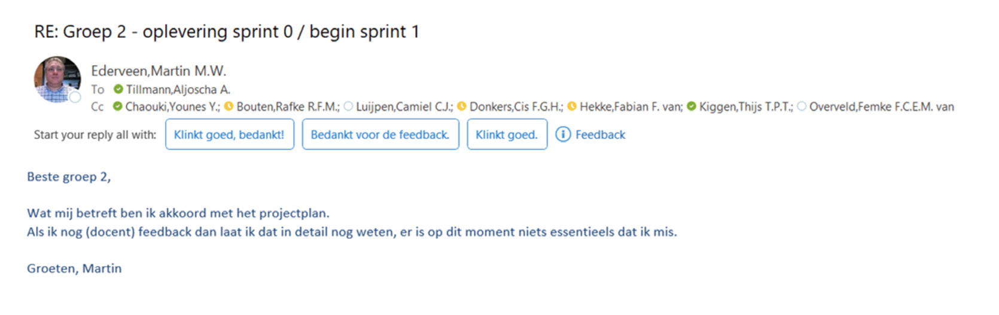

Leerdoel 6
Je adviseert een of meer stakeholders over de doeltreffendheid en technische haalbaarheid van het door jou gerealiseerde product.
Adviseren
op een professionele manier communiceren met en presenteren aan een klant.
Stakeholder
een externe partij die belang heeft bij of beïnvloed wordt door je product.
Efficiëntie en technische haalbaarheid
het product wordt voorzien van conclusies en aanbevelingen voor een volgende iteratie.
In teamverband
Je kunt samenwerken met anderen en een operationeel team om een gezamenlijk resultaat te bereiken.
TruckerDirect
Contact met stakeholder.
Omdat we in sprints werkte van 2 weken, hadden we vaak contact met de klant voor Truckerdirect. Van de docent hebben we telkens veel feedback gehad om het product naar het volgende level te brengen.KEURING SPRINT 0
In mondeling overleg tijdens de les van 05-09-22 hebben wij een voorstel richting de docent gedaan. Met behulp van zijn feedback hebben wij kleine aanpassingen kunnen doen om het bedrijf volledig richting “IT-dienstverlener” te transformeren. Uiteindelijk heeft Martin de volgende feedback gegeven:OPLEVERING SPRINT 0
Tijdens de les van 12-09-22 is ons idee door Younes gepresenteerd aan onze medestudenten. Verder is ons idee door middel van een uitgewerkt “Businessmodel canvas” gepresenteerd aan een gastspreker (het Eindhovense bedrijf Ratho).
KEURING SPRINT 1
De volgende aantekeningen zijn gemaakt tijdens de oplevering van Sprint 1. Zij bevatten de feedback van Martin en Arno.Wat de klant wil zien:
• Hoe kun je inloggen?
• Wat is het gebruikersgemak?
• Wat gebeurt er als ik klik op een rit? Wat zie ik dan?
• Hoe kom ik in aanmerking voor de rit? Word ik ingeloot? Moet ik de eerste reageerder zijn? Zo ja, hoeveel tijd heb ik om te beantwoorden?
• Als ik de rit accepteer krijg ik dan aanwijzingen waar ik de vracht op moet halen?
• Wat als ik geaccepteerd heb en het niet haal in de afgesproken tijd?
• Functionele flow (zoals hierboven omschreven in de vorm van vragen)
Het moet aan de pagina te zien zijn welke gedachte erachter zit. De klant wil het gevoel hebben dat de site veilig is. Denk aan inloggen of bijvoorbeeld 2-factor-authenticatie.
Infra:
Maak een netwerktekening met aparte blokken zodat het zichtbaarder wordt welke netwerken er zijn. Gebruik bij een klant geen termen zoals WAN. De domaincontrollers staan momenteel op hetzelfde netwerk net zoals de SQL. Dat is niet handig, omdat je zo geen redundantie hebt. Je hoeft dit niet redundant te bouwen, als je maar omschrijft wat je doet en wat beter kan. Is het active-directory alleen bedoeld voor intern? Hoe melden de klanten zich dan aan? Door middel van SQL-database.
Maak een netwerktekening met aparte blokken zodat het zichtbaarder wordt welke netwerken er zijn. Gebruik bij een klant geen termen zoals WAN. De domaincontrollers staan momenteel op hetzelfde netwerk net zoals de SQL. Dat is niet handig, omdat je zo geen redundantie hebt. Je hoeft dit niet redundant te bouwen, als je maar omschrijft wat je doet en wat beter kan. Is het active-directory alleen bedoeld voor intern? Hoe melden de klanten zich dan aan? Door middel van SQL-database.
Business:
Het zou een interessante feature kunnen zijn om de routes ook te plannen. Zodat je de meest efficiënte route kunt plannen. Wij plannen nu alleen ritten en geen routes. Als we ook voor de routes zouden zorgen, kan het efficiënt rijden met een vracht een doel op zich zijn. Kijk naar je concurrentie, en gebruik de informatie die je daar ziet. Bijvoorbeeld TeleRoute, die insprongen op de behoefte om vrachtwagens ook op de terugweg vracht te laten vervoeren. Dat was een snel verdienmodel voor het bedrijf. Wanneer we gebruik gaan maken van een score-systeem voor de truckers en transportbedrijven moeten we rekening houden met de ethiek. Discrimineert het systeem nieuwe truckers? Nieuwe transportbedrijven? Via onderstaande website kun je een controle uitvoeren om je idee ethisch te controleren.
Het zou een interessante feature kunnen zijn om de routes ook te plannen. Zodat je de meest efficiënte route kunt plannen. Wij plannen nu alleen ritten en geen routes. Als we ook voor de routes zouden zorgen, kan het efficiënt rijden met een vracht een doel op zich zijn. Kijk naar je concurrentie, en gebruik de informatie die je daar ziet. Bijvoorbeeld TeleRoute, die insprongen op de behoefte om vrachtwagens ook op de terugweg vracht te laten vervoeren. Dat was een snel verdienmodel voor het bedrijf. Wanneer we gebruik gaan maken van een score-systeem voor de truckers en transportbedrijven moeten we rekening houden met de ethiek. Discrimineert het systeem nieuwe truckers? Nieuwe transportbedrijven? Via onderstaande website kun je een controle uitvoeren om je idee ethisch te controleren.
Software:
Het gebruik van auto-fill drivers is ook een kwestie van ethiek en een risico om discriminatie te veroorzaken. Een auto-route systeem zou een beter idee zijn volgens Martin. Waarbij je kunt kijken naar de positie van truckers en de beschikbare routes. Daarnaast blijft hij terugkomen op het uitzoeken van de meest efficiënte route. Ermee rekening houdende dat de truckers moeten stoppen, en kunnen parkeren. Zijn er bestaande systemen die dit al kunnen en kunnen wij die integreren? Een andere optie zou kunnen zijn om milieu bewuste routes aan te bieden (zoals Google nu doet). Alle benoemde opties zijn geen must-haves. Maar het zou goed zijn om alles in een ontwerp te zetten en puntsgewijs aan de slag te gaan. Wat is haalbaar? Wat heeft prioriteit. Een demo zou zeer op prijs worden gesteld.
Het gebruik van auto-fill drivers is ook een kwestie van ethiek en een risico om discriminatie te veroorzaken. Een auto-route systeem zou een beter idee zijn volgens Martin. Waarbij je kunt kijken naar de positie van truckers en de beschikbare routes. Daarnaast blijft hij terugkomen op het uitzoeken van de meest efficiënte route. Ermee rekening houdende dat de truckers moeten stoppen, en kunnen parkeren. Zijn er bestaande systemen die dit al kunnen en kunnen wij die integreren? Een andere optie zou kunnen zijn om milieu bewuste routes aan te bieden (zoals Google nu doet). Alle benoemde opties zijn geen must-haves. Maar het zou goed zijn om alles in een ontwerp te zetten en puntsgewijs aan de slag te gaan. Wat is haalbaar? Wat heeft prioriteit. Een demo zou zeer op prijs worden gesteld.
De volgende aantekeningen nemen wij mee voor de volgende
sprint 2:
Infra:
Wat betreft monitoring is het belangrijkste om na te denken welke requirements je wilt weten. Wanneer je iets gaat monitoren, welke criteria heb je dan? En wat gebeurt er met de gemonitorde data? Wordt er actie ondernomen door een servicedesk? Zijn advies is om monitoring op gebied van resourcemonitoring. Waarbij je kunt zien of de huidige capaciteit voldoende is, of dat je er capacity management op kunt loslaten. Dat wilt zeggen: hoeveel schijven zijn in gebruik? IO en Memory capacity? Moet je de systemen opschalen (Kubernetes)? Criteria is belangrijker dan uitvoering. Behalve als je het ook automatiseert, dan kan het interessant zijn om ook de uitvoering te laten zien.
Wat betreft monitoring is het belangrijkste om na te denken welke requirements je wilt weten. Wanneer je iets gaat monitoren, welke criteria heb je dan? En wat gebeurt er met de gemonitorde data? Wordt er actie ondernomen door een servicedesk? Zijn advies is om monitoring op gebied van resourcemonitoring. Waarbij je kunt zien of de huidige capaciteit voldoende is, of dat je er capacity management op kunt loslaten. Dat wilt zeggen: hoeveel schijven zijn in gebruik? IO en Memory capacity? Moet je de systemen opschalen (Kubernetes)? Criteria is belangrijker dan uitvoering. Behalve als je het ook automatiseert, dan kan het interessant zijn om ook de uitvoering te laten zien.
Business:
Denk na over de ethiek vraagstukken met de gehele groep. Martin gaat daar vragen over stellen de volgende keer! Bij het verdienmodel is het belangrijk om resourcesverbruik in kaart te brengen.
Denk na over de ethiek vraagstukken met de gehele groep. Martin gaat daar vragen over stellen de volgende keer! Bij het verdienmodel is het belangrijk om resourcesverbruik in kaart te brengen.
Media:
Martin kan ook als klant betrokken kunnen worden tussendoor. Dan moeten wij dat afspreken. Hij kan niet garanderen dat hij weet wat hij wil als klant zijnde.
Martin kan ook als klant betrokken kunnen worden tussendoor. Dan moeten wij dat afspreken. Hij kan niet garanderen dat hij weet wat hij wil als klant zijnde.
Software:
Martin wil ook een functionaliteit zien in ons ontwerp. Niet alleen software gericht, ook aangeven wat de die functie-blokken doen. Bijvoorbeeld een blok dat praat de database. Hij wil een functioneel ontwerp zien. Hij hoeft niet bij elke retrospectieve te zijn. De volgende keer sluit hij aan. Daarnaast moeten we nadenken over sprint 2. Wat beloven we aan hem? Wat gaat hij zien? Martin wil dat we iets beloven wat we dan opleveren. Hij wil iets van functionaliteit zien. Wat werkt er, kan er ingelogd worden? En zijn er ritten zichtbaar (ook al zijn deze nep)? Wij verzinnen wat we gaan beloven voor sprint 2 en leggen dit vast. Dit is belangrijk voor de klant; de klant wenst iets “voelbaars”. Als het resultaat dingen zijn die je in de sprint beloofd hebt. Dan wil hij dat zien. De proftaak gaat om skills te ontwikkelen die je niet hebt en skills mee te nemen die je hebt. Onderbouwen waarom je dingen doet. Uitleggen wanneer en waarom iets veiliger is.
Martin wil ook een functionaliteit zien in ons ontwerp. Niet alleen software gericht, ook aangeven wat de die functie-blokken doen. Bijvoorbeeld een blok dat praat de database. Hij wil een functioneel ontwerp zien. Hij hoeft niet bij elke retrospectieve te zijn. De volgende keer sluit hij aan. Daarnaast moeten we nadenken over sprint 2. Wat beloven we aan hem? Wat gaat hij zien? Martin wil dat we iets beloven wat we dan opleveren. Hij wil iets van functionaliteit zien. Wat werkt er, kan er ingelogd worden? En zijn er ritten zichtbaar (ook al zijn deze nep)? Wij verzinnen wat we gaan beloven voor sprint 2 en leggen dit vast. Dit is belangrijk voor de klant; de klant wenst iets “voelbaars”. Als het resultaat dingen zijn die je in de sprint beloofd hebt. Dan wil hij dat zien. De proftaak gaat om skills te ontwikkelen die je niet hebt en skills mee te nemen die je hebt. Onderbouwen waarom je dingen doet. Uitleggen wanneer en waarom iets veiliger is.
Presentatie sprint 2
Hierbij de presentatie die gepresenteerd is op 29-09-2022.keuring sprint 2
Verdienmodel
Martin vraagt waar ons verdienmodel op gebaseerd is? En of andere bedrijven het ook zo doen? Hij vindt het verdienmodel nuttige informatie omdat je dan het idee krijgt wat moet je doen om te kunnen bestaan als bedrijf. Hij is onder de indruk van de return of investment, en ook dat deze 2 jaar is. Hij vindt het fijn dat we ons verhaal brengen vanuit het bedrijf Truckerdirect en niet vanuit de individuele disciplines en/of klasgenoten. Martin vraagt hoe we aan de kilometerstand komen van de gereden kilometers die we in rekening brengen. Hij geeft aan dat we dat via een onafhankelijke bron zouden moeten doen (koppeling met Goole Maps of iets vergelijkbaars).
Aandachtspunt sprint 3:
Belofte dat we dit realiseren en hij het werkend kan zien.
De API-koppeling is mogelijk met Google Maps of een vergelijkbare
dienst. Deze requirement moet dan ook uit de won’t-have’s
en in de must-have’s. Welke impact heeft dat op de andere musthaves?
Die moeten we herzien, ook als we als beloftes hebben
gemaakt.
Dit is reeds verwerkt in de requirements:

Waarom maken we gebruik van dit verdienmodel en laten we de
transportbedrijven geen fee betalen? Motivatie daarvoor is de
drempel zo laag mogelijk houden. Volgens Martin zou ook beiden
kunnen, betalen voor kilometers voor freelancers en bedrijven
wel een fee laten betalen.
Aandachtspunt 3
Aandachtspunt sprint 3: Wij moeten uitwerken hoe we omgaan met persoonsgegevens (AVG). Omdat we een validiteitscheck doen op de rijbewijzen van de truckers.Wat betreft de netwerktekening is dit een hele verbetering met de vorige. Alles wat we benoemen in de netwerktekening kunnen we uitwerken om vervolgens te controleren bij Arno. Aandachtspunt sprint 3: Martin verwacht dat we een back-up strategie maken en ook aan monitoring doen. Daarnaast moeten we nadenken over security en alerting.
De monitoring is van belang, denk hierbij eerst na over wat je wilt bereiken met de monitoring en wat je met die informatie doet.
Aandachtspunt sprint 3: Wat betreft security is een aandachtspunt het inloggen, daar kunnen we bijvoorbeeld multi-factor authenticatie bij gebruiken.
We kunnen ook nog gebruik maken van gegevensverificatie door middel van bankgegevens. Omdat we er wel zeker van willen zijn dat de transporteur en de freelancer kan betalen. Het inbouwen van deze check hoort in het schema thuis (Technisch ontwerp). Martin wil weten wat wij allemaal willen, het einddoel. En daarna een abstract of demo hoe het nu werkt, hoe we er nu voorstaan.
Het gebruik van MySQL raadt Martin af, vanwege de trage transactie- snelheid. Een betere keuze zou MongoDB zijn. Wat zich nog beter zou lenen voor dit concept is blockchain, daarmee leg je meteen de transacties vast.
Aandachtspunt sprint 3: Onderbouwde keuze maken voor de SQL-server.
Bij de demo komt terug dat we de inlogprocedure verder moeten beveiligen met multi-factor authenticatie, en ook de wachtwoordeisen moeten strenger.
Het is verplicht om aan te geven wat je met je cookies doet op de website door middel van een banner en/of pop-up venster.
Aandachtspunt sprint 3: Cookie-melding
Wat er inhoudelijk nog kan worden toegevoegd aan het platform:
• Capaciteit van de truck
• Type lading dat de truck kan vervoeren (vers, vloeibare stoffen, uitzonderlijke lange vracht etc.)
• De vrachtbrief als attachment bijvoegen (met daarop vrachttype etc.)
• Veiligheidseisen als attachment bijvoegen (vergunningen, vervoeren van zware vracht etc.)
• Wat als een trucker meerdere trucks heeft? Kan hij dan beiden toevoegen?
• Kenteken registreren?
Wat gebeurt er in geval van calamiteiten? Niet onze verantwoordelijkheid (goed afbakenen, disclaimer). Wij verzorgen het platform dat een verbinding legt tussen freelancers en transportbedrijven.
Aandachtspunt sprint 3: Opzet algemene voorwaarden
Bij vrachtbrieven zou je speciale wensen kunnen toevoegen? Dat is volgens Martin niet onze verantwoordelijkheid. Je kunt een opmerkingenveld toevoegen.
We zijn niet verantwoordelijk voor het gedrag van de chauffeur. Check is essentieel, we garanderen wel dat de trucker een goede truck heeft en mag rijden (en bewijs dat hij speciale vracht mag vervoeren bijvoorbeeld).
Dat kunnen we ook bij de transporteur leggen. Zonder de verantwoordelijkheid (andere check laten inbouwen). We moeten erover nadenken wat we willen en hoe ver we er in gaan.
KEURING SPRINT 3
Wij moeten de gastdocent zelf uitnodigen voor de volgende sprint (Michail?)Martin is tevreden met de KPI’s. Hij wilt in de visualisaties graag de schaal zien op dagen of weken, welke schaal is aan ons maar hij wilt wel een schaal zien.
Aljoscha geeft aan dat we bij de volgende sprint dashboards kunnen laten zien.
Martin geeft als advies om de uptime niet te benoemen. Het is beter om de downtime te plannen en verder niet te praten over de uptime. De gekozen downtime van 42 minuten per maand, is voldoende.
Raoul voegt daar nog aan toe dat je met de huidige technieken in infrastructuur geen downtime nodig hebt voor webservers. Je kunt ze laten draaien in containers zoals Docker en via Kubernetes clusters. Daarmee kun je updaten zonder dat de website offline gaat.
Martin zou er tevreden mee zijn dat de maximale downtime 40 minuten is. Raoul zijn optie geeft je wel een mogelijkheid om dit ook door te berekenen aan de klant. Minder downtime zorgt ervoor dat je je product beter kunt verkopen. Martin heeft geen commentaar op de cookies en advertenties (is onze keuze).
Wat betreft back-up vraagt Martin of we een berekening zouden kunnen maken van de hersteltijd. En kunnen we maatregelen nemen om de hersteltijd zo kort mogelijk te maken?
Het zou interessant zijn om een risico-analyse te maken, waar zijn we het meest kwetsbaar voor? En daar dan standaardmaatregelen voor in te voeren (SQL injection, crossite scripting, DDOS). Dit kun je gebruiken in combinatie met security monitoring (wat zijn de grootste risico’s en hoe vang ik die af?) Hoe kwetsbaar is onze software?
De vragen wat betreft security zijn voornamelijk wat is je core-business? Welke data heb ik nodig? Wat wil ik bereiken met die monitoring? Uptime is voor ons heel belangrijk, als website. Zodra we niet meer bereikbaar zijn, vallen de inkomsten ook weg.
Interessant om te bekijken hoe de opdrachten binnen komen. Wat is de dataflow? Van opdracht plaatsen tot het accepteren van de opdracht door de trucker. Op basis daarvan kunnen we bekijken waar de kritische punten in ons bedrijf zitten. Waar zou ik maatregelen kunnen nemen om te zorgen dat die kritische punten beveiligd zijn? Vragen die daarbij horen:
• Waar kunnen gebruikers input leveren?
• Waar heb ik connecties met het internet?
• Hoe zit het met mijn systemen (wat is mijn updatecyclus?)
De aggregatie van data kun je indelen in de volgende drie categorieën:
• Opslag (immutable back-up is hier een maatregel voor)
• Transport
• Mutatie
Deze drie hebben allemaal andere kwetsbaarheden. En dus ook andere maatregelen om te beveiligen. Een voorbeeld van een maatregel kan zijn een blackbox. Martin geeft aan dat we de requirements van de monitoring verder moeten uitwerken en dan kunnen toepassen. Hij geeft aan dat de bare minimum het monitoren van performance is. En wellicht nog security monitoring. Wat is er nodig om de omgeving in de lucht te houden?
Martin geeft als tip om een sniffer te gebruiken op het SNMP- netwerk. En om de servers te monitoren. Bijvoorbeeld Surrecata. Wat nog een leuke toevoeging kan zijn, zijn job templates: voor wanneer een bedrijf vaak dezelfde route uit zet.
Martin: verzinnen jullie die features of laat je dat verifiëren door een trucker of transportbedrijf? Dat laatste zou het beste zijn, en die kunnen dan ook het beste laten beoordelen wat er nodig is.
Onze formulering naar de klant over onze test-omgeving: we gaan heel zorgvuldig met de procedures om. Daardoor gaat er nooit iets kapot/verloren omdat we eerst testen op de testserver.
Vraag voor Martin; Wilt u dat de routekaart live geüpdatet kan worden in plaats van alleen in ‘edit mode’? Of wilt u meerdere stops kunnen toevoegen aan 1 job?
Antwoord: heeft hier geen antwoord op, en zegt dat we dit beter kunnen ophalen bij de truckers. Zij hebben meer verstand van de praktijk.
Vraag voor Martin; Is het voor u belangrijk dat het e-mailadres van de gebruiker gecontroleerd wordt? Of zullen we de laatste weken besteden aan filters voor jobs. Hierin kunnen freelancers dan filteren op bijvoorbeeld (oud-nieuw of locatie).
Antwoord: Ja, verifieer de emailadressen (dat het emailadres bestaat)